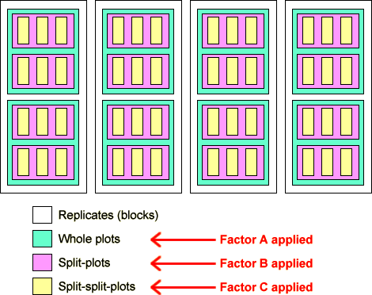

Understanding the design of an experiment
When reading the description of an experiment, considerable care must be taken to understand the hierarchical structure of the experimental units and the levels at which each factor is varied.
Corn hybrids
A study was conducted in Michigan to determine the influence of plant density and hybrids on corn (Zea mays L.) yield. It was described in a textbook as follows:
The experiment was a 2 × 2 × 3 factorial replicated four times in a randomised complete block design arranged in a split-split-plot layout. In this experiment, factor A is the two corn hybrids (P3730 and B70 × L55) assigned to the main plots, factor B is the two row spacings (12 and 25 in.) assigned to the sub-plots and factor C is the three target plant densities (12,000, 16,000 and 20,000 plants/acre) assigned to the sub-sub-plots.
Can you identify the hierarchical structure of the experimental units and the levels at which the factors are allocated?
The term 'replicate' implies here a complete repeat of the whole experiment, so the four replicates are the top-level blocks. The diagram below describes the structure of the experiment.

The table below shows the experimental results, arranged to make the structure clearer.
| Density | |||||
|---|---|---|---|---|---|
| Replicate | Hybrid | Spacing (in) | 12,000 | 16,000 | 20,000 |
| Rep 1 | P3730 | 12 | 140 | 145 | 150 |
| 25 | 136 | 140 | 145 | ||
| B70 × LH55 | 12 | 142 | 146 | 148 | |
| 25 | 132 | 138 | 140 | ||
| Rep 2 | P3730 | 12 | 138 | 146 | 149 |
| 25 | 132 | 134 | 138 | ||
| B70 × LH55 | 12 | 132 | 136 | 140 | |
| 25 | 130 | 132 | 134 | ||
| Rep 3 | P3730 | 12 | 130 | 150 | 146 |
| 25 | 134 | 136 | 138 | ||
| B70 × LH55 | 12 | 128 | 140 | 142 | |
| 25 | 136 | 130 | 130 | ||
| Rep 4 | P3730 | 12 | 142 | 147 | 150 |
| 25 | 138 | 140 | 142 | ||
| B70 × LH55 | 12 | 140 | 141 | 140 | |
| 25 | 134 | 132 | 136 | ||
Note that the table does not give any indication that a split-split-plot design was used.
A data table of the same form could have arisen from a simple randomised block experiment in which the 12 treatments were randomised within each 'replicate'.
Do not rely on the data table to 'define' the structure of the experiment. The proper analysis depends on identification of the existence of a split-plot design.
The analysis of variance table above initially shows the sums of squares explained by the four levels in the hierarchy of experimental units.
Click Split plots to separate the sum of squares explained by the two hybrids. From its p-value (0.0192), we conclude that there is moderately strong evidence that yield is affected by the hybrid.
Now click Split sub-plots to separate Spacing from the sub-plot sum of squares. The Spacing-Hybrid interaction is also explained at this level. From the p-values, there is extremely strong evidence that the spacing affects yield but no evidence of an interaction.
Finally, click Split sub-sub-plots to separate the sums of squares explained by the factors at this level. (We have restricted attention to 2-factor interactions but the 3-factor interaction between all factors could have been found at this stage too.) It is almost certain that planting density affects yield and there is moderately strong evidence of an interaction between density and spacing.
Summary
The anova table above showed evidence of a main effect for the hybrid and an interaction between the spacing and density. These are described by the diagrams below that display the mean yields for each of the two hybrids and the mean yields for all combinations of spacing and density.